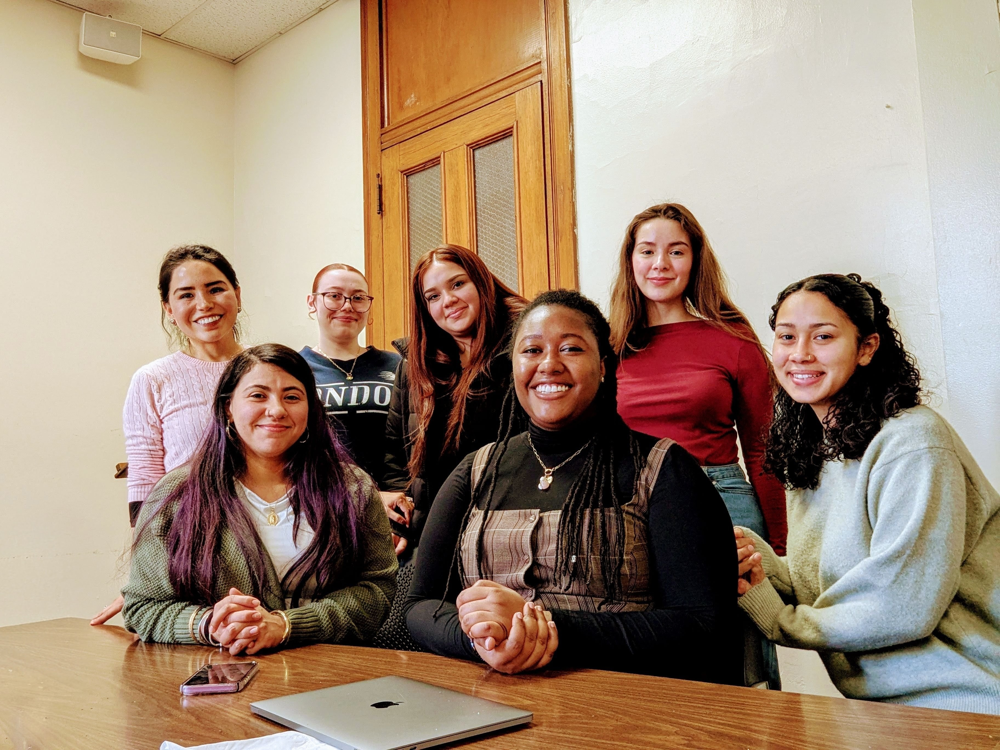

LADS Students & Graduates

Students
Students in the Latin American Development Studies minor engage Latin America through an interdisciplinary lens that brings together politics, development, gender, migration, environment, culture, and social justice.
The program encourages students to connect classroom learning to the major challenges facing the region and to broader global questions about inequality, democracy, and human dignity.
Through coursework and faculty mentoring, students develop strong analytical and communication skills while exploring issues such as migration, environmental justice, indigenous rights, and development policy.
The minor complements a wide range of majors and supports students as they prepare for graduate study, public service, nonprofit work, and globally oriented careers.
Student Engagement
- Faculty-mentored research
- Conference presentations
- Community engagement
- Interdisciplinary learning
- Focus on social justice and sustainability
Graduates
LADS graduates pursue diverse paths in graduate study, public service, nonprofit work, and policy. Their experience in the minor provides a strong interdisciplinary foundation and a deep understanding of Latin America.
.....
....

Your Story Here
This space is reserved for future LADS graduates who will inspire new students through their journeys.
If you are a LADS graduate and would like to be featured, please send a photo and a short update. Your story can inspire future students.